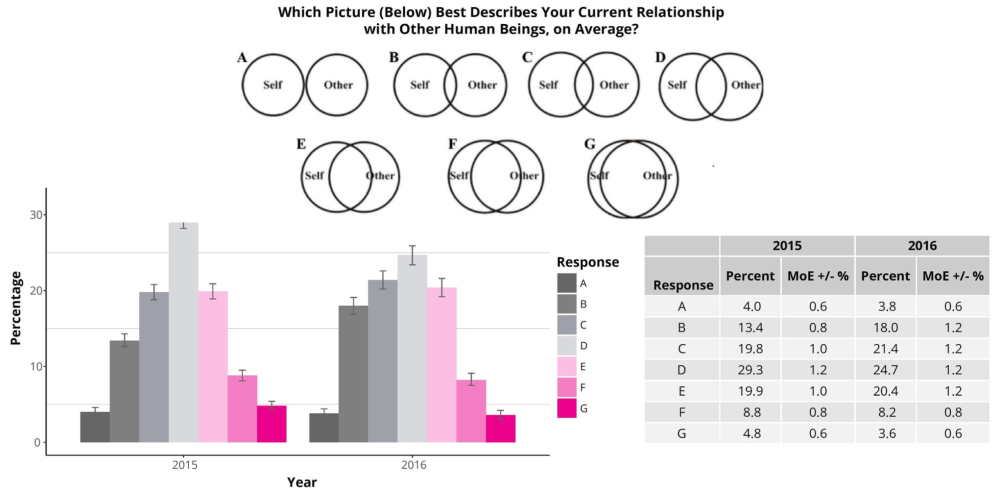
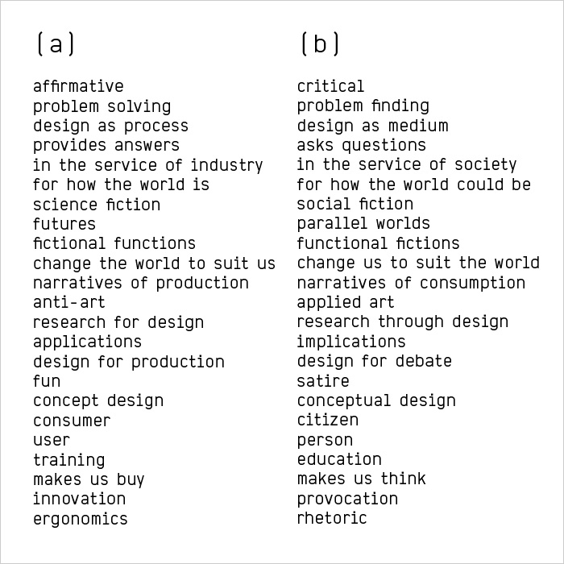

COMMUNICATION
Crocker's rules
I have declared Crocker's rules. You are invited to speak your mind to me without bothering with politeness or convention. Further details in the quote:
"Declaring yourself to be operating by Crocker's rules means that other people are allowed to optimize their messages for information, not for being nice to you. Crocker's Rules means that you have accepted full responsibility for the operation of your own mind - if you're offended, it's your fault. Anyone is allowed to call you a moron and claim to be doing you a favor. (Which, in point of fact, they would be. One of the big problems with this culture is that everyone's afraid to tell you you're wrong, or they think they have to dance around it.) Two people using Crocker's Rules should be able to communicate all relevant information in the minimum amount of time, without paraphrasing or social formatting. Obviously, don't declare yourself to be operating by Crocker's Rules unless you have that kind of mental discipline.
Note that Crocker's Rules does not mean you can insult people; it means that other people don't have to worry about whether they are insulting you. Crocker's Rules are a discipline, not a privilege. Furthermore, taking advantage of Crocker's Rules does not imply reciprocity. How could it? Crocker's Rules are something you do for yourself, to maximize information received - not something you grit your teeth over and do as a favor.
"Crocker's Rules" are named after Lee Daniel Crocker."
You are encouraged but not required to reference Crocker's Rules whenever you are about to make use of them.
Six thinking hats
I dedicate most of my processing power towards categorization. I try to figure out where the categorization came from, and if it would make sense to use it at all. I use deductive reasoning as much as I can, and am fond of the six thinking hats. They are, in short:
Blue [managing] - what is the subject? what are we thinking about? what is the goal?
White [information] - considering purely what information is available, what are the facts?
Red [emotions] - intuitive or instinctive gut reactions or statements of emotional feeling.
Black [discernment] - logic applied to identifying reasons to be cautious and conservative.
Yellow [optimistic response] - logic applied to identifying benefits, seeking harmony.
Green [creativity] - statements of provocation and investigation, seeing where a thought goes.
Private conversations
If you find yourself wanting to communicate something to me that shouldn’t be relayed to anyone else for either reason, please use Telegram or be explicit in communicating this to me. Privacy and safety is very important to me. Generally I will not replicate personal information you have relayed. There are rituals we can use as a tool to mark private conversations if needed. I will also do my best to form my opinions about people based merely on empirical evidence.
Ping
I like the use of ping ping as a protocol for electronic mediums, especially as the content of the conversation may change depending on the timing of your response. Echo it as you wish, but “pong” is traditional.
I may at times send you a message that just says 'ping'. You may respond however you like, but the traditional response is 'pong'. I will usually begin an electronic conversation this way if the actual content of the communication may change depending on when you respond. All hackers know this protocol, and now so do you.
Goldilocks zone of oneness
"For when it starts feeling like a prison in there - and it usually does for most people - you are confronted with the fact that the bars are of your own making."
- John C. Lilly, The Deep Self: Consciousness Exploration in the Isolation Tank
I try to stay within what "algekalipso" calls the Goldilocks Zone of Oneness [see image below, response D], as I believe this to be the most healthy.
From Qualia Computing: "... there might be a psychologically tolerable range for how much you believe in universal oneness. That is, it's best to feel neither completely merged nor completely separate. Close enough that one can relate to others and not feel separate, but not so close that one's existence feels redundant and cosmic loneliness sets in."
TANGIBLE INTERACTIONS
"The edge of chaos is where life has enough stability to sustain itself and enough creativity to deserve the name of life."
- Waldrop 1992
External processing and making tangible things is closely correlated to my happiness. I am transmedium, and believe in highlighting communication beyond words. Some of the ways in which I do so follow:
Bodyhacking, tantra/yoga/meditation, various electronic feedback mechanisms and translations, dance, acro yoga and pole dancing, sowing and clothing as expression, photography, interactive art installation.
[a] by day, [b] by night
As an interaction designer, one of my favorite things is to reflect on how design and technology shapes our relationship to ourselves and each other. Hit me up if you need help with or like discussing either. From Dunn and Raby's a/b manifesto: Stable builds gives me smooth hardware
"To worship me take wine and strange drugs whereof I will tell my prophet, & be drunk thereof! ... Be strong, o man! lust, enjoy all things of sense and rapture: fear not that any God shall deny thee for this."
- AL II:22
I calibrate my default state and ever evolve it by [effective 04/15/19-05/15/19]:
* Meditating 30 min a day * Make my heart pump faster than [current] resting pulse for 20 min a day * Feed myself two fists of vegan fuel every 4 hours (max), and fast 8 hours each day (min). * Not consume drugs, sweets or alcohol from my own hands or a container but only from the flesh of another consenting person. Body shots, snorting things off of you, and shotgunning are all acceptable. Exceptions to this are made for caffeine, nootropics, anything taken to treat a medical condition under suitable direction as appropriate, religious rituals, and a once weekly 24h anything goes pass. Also I can similarly pass things to you when that aligns with the spirit of the rule.
The rules above are designed for me to spend a majority of my time in an every evolving default state, avoid stand by mode, draining, or off-equilibrium states while still exploring and maximizing what life has to offer, and connect with other people.
THE RULES FOR HOPSCOTCH
"Ben, you were there less than a day - fifteen hours, about - and you spent over half that time sleeping and playing hopscotch with Dawn ... When, after a week, Jubal had had no other message, he sent a stat care of Ben's office: "What the hell are you doing?" Ben's answer came back, somewhat delayed: "Studying Martian and the rules for hopscotch - fraternally yours - Ben."
- Heinlein, Stranger in a Strange Land
Safety considerations
I get tested periodically. I am diligent with condom use. Any exceptions must follow under a system along the lines of the condom compact described by Morning Glory Zell. In short, below:1. All members of the Cadre may have unprotected vaginal or anal sex only with other members of the Cadre. All members of the Cadre must use condoms with any outside lovers. This rule does not apply to oral sex, which at this time is considered safe.
2. The Condom Commitment begins with a founding relationship where trust is absolute. Lovers may join only by mutual consent of all involved.
3. If a member of the Cadre slips up and has an unprotected fling then they must go through a quarantine period, be tested for all STDs, then accepted back in only by complete consensus of the other members of the Cadre. The duration of the quarantine period shall be determined by the other members of the Cadre based on the most up-to-date medical knowledge available. The same drill applies if a condom breaks during intercourse with an outside lover.
The stoplight system
I strongly feel that people need to take responsibility over their own actions, and any rules that have been applied between them and a significant other should not be expected to be known or followed by other parties. Conversations about consent may ideally be restrained to a dedicated time and space as that allows for lateral objectivity. The stoplight system is a simple way in which I navigate trickier situations.Green = FUCK yes!
Yellow = Hold for consideration. A private conversation and reflection is needed before further action can be taken.
Red = No. I do not want to engage at this moment.
Corresponding hand signs (used if needed/appropriate):
Green = default mode! No hand sign required.
Yellow = scratching your right ear and maintaining eye contact with the person/s involved.
Red = scratching your right cheek and maintaining eye contact with the person/s involved.
Johnny's two rules
I have adopted Johnny's two rules as my own. Roughly paraphrased;1. I cannot be anyone's sole source of affection.
2. You must do your best to get along with anyone else I spend my time with. This includes letting me know when that is difficult for you.
The veto
"For I am divided for love’s sake, for the chance of union."
- Nuit
WHEN I EXPIRE
Know that the form in which you have known me as was enriched and loved, and that I want you to be happy first and foremost. Please stay positive and curious. I invite you to spend some time with my flesh if possible but mainly I want to empower you to be able to process the loss of my presence in a way that will be the most productive for you. You may want to highlight ways I can still live with you that don't involve the tangible manifestation of me. Whatever you wish to do it correct, that being said - know that it is my natural desire for me to be eaten by those who have known me intimately, in the form of a slow, conscious 5 course meal. The rest of my parts may be divided in sea, earth and wind, or be kept in the form of ashes and bones for decoration, utility, and for my beloved parents, aunt and uncle to symbolically feel my presence. I invite you to deliver parts of my ashes in person to them as I won't be able to. I especially want my father to know he is a true hero and should be worshipped and learnt from for greater good. Any still beating string of parts can be transferred to other humans. Find my advance directives here [link to come soon]. The biggest favor you can do me in reading this is to fill one out for yourself and share it.Thanks to Joshua Upgrade Jackson and his Rules of Engagement for inspiring me to put this together.